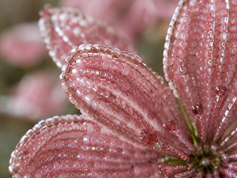
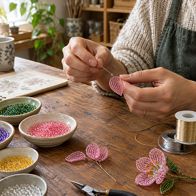

What are French beaded flowers?
French beaded flowers are made by threading glass seed beads onto wire to form petals and leaves, which are then twisted together into a flower. Every piece is made by hand. The craft began in France in the 1800s, when beaded flowers were popular as lasting decorations.

How each flower is made
Choose beads
Seed beads or cut dana in your chosen colours.
Shape the petals
Beads are threaded on wire and shaped by hand.
Assemble
Petals, leaves and stems are joined into a flower.
Finish & pack
Checked, packed with care and sent to you.

Made slowly, by hand
One flower takes about 1 to 2 days, and larger pieces can take around 30 hours. That is why every piece is truly one of a kind.
Made to last for decades
Glass beads and wire do not wilt or fade like fresh flowers. They make lasting gifts and decoration for your home.
Care instructions
- Keep away from heavy moisture and direct, harsh sunlight.
- Dust gently with a soft, dry brush.
- Handle by the stem and avoid squeezing the petals.
- Store in a dry place when not on display.
Love what you see?
Browse the shop or design your own bouquet.